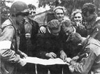

The Dutch Resistance
I would be remiss if I didn’t discuss the efforts of the Dutch Resistance, particularly as it pertained to the rescue of Jewish people in Holland. As I alluded to in the novel, many Dutch citizens hid Jews—along with Jehovah Witnesses, socialists, and others who had been singled out for deportation and murder by the Nazis—and some were involved in their transportation across the country and across borders. Their stories, along with my own family’s, had particular impact in the writing of this novel.
Joop Westerweel was a Dutch teacher who rescued Jews during the Holocaust. In 1942, he got to know a young group of Zionists living at a farm near his home. He and their counselor, Joachim Simon, organized an underground movement to find hiding places for the young people and develop escape routes through Belgium and France to Switzerland and Spain. These men, along with their colleagues, helped save 200 Jewish lives. In the fall of 1942, Simon was caught in France, arrested and took his own life so he wouldn’t be forced to betray the others. The Nazis captured Joop at the Dutch/Belgium border in March 1944, while on his way back to the Netherlands after leading a group of Jewish children to safety in Spain. He was sent to Vught concentration camp and executed in August.
Three woman—Hannie Schaft—known as “the girl with the red hair”—and two sisters, Truus and Freddie Oversteegen, worked together in the Resistance movement during the war, particularly in “armed resistance”—a path usually only taken by men. They began by spreading illegal newspapers, transporting weapons, stealing and/or falsifying identity cards, sabotaging German facilities, disguising as German girls to extract information from the German soldiers and bringing Jewish children to hiding places. In November 1943 Hannie and a few other members of the resistance group tried to blow up a power station near Haarlem, but they were only partially successful. Hannie also participated in the elimination of several members of the German secret police and Dutch collaborators. But in March 1945, Hannie was arrested at a routine checking because she had illegal newspapers and her pistol in her bag. The Germans recognized her as the girl with the red hair, and in April, she was executed. Truus and Freddie survived and went on to commemorate Hannie’s war efforts and courage.
Diet Eman, a young Dutch woman and her fiancé, Hein Sietsma, worked with other Resistance members to save hundreds of Dutch Jews. They risked their lives to hide Jews, steal false papers, bomb German facilities and rescue Allied soldiers. Sietsma was caught and killed after being deported to Germany. Eman was imprisoned for having false papers, but she played dumb, and the Nazis never discovered her true role in the Resistance. She was released from Vught concentration camp after one month. She returned to work with the Resistance, stealing blank IDs and provisions for the Jews while other members distributed materials. Eight of her original fifteen-member Resistance group was killed doing this work.
In an interview many years after the war Eman mentions that everyone they approached were willing to help. Twenty-three thousand Dutch citizens were active in the Resistance, and this didn’t include people who hid Jews in their homes. This was particularly surprising to the Nazis. Since Dutch people were generally blond and blue-eyed—what the Nazis considered superior beings—they expected them to go along with their policies. Instead most of the Dutch people were outraged, and through their stories, I learned of their courage and defiance throughout this brutal war.
To learn more about the Dutch resistance during World War II, you can visit the Resistance Museum in Amsterdam: http://www.verzetsmuseum.org/museum/en/museum